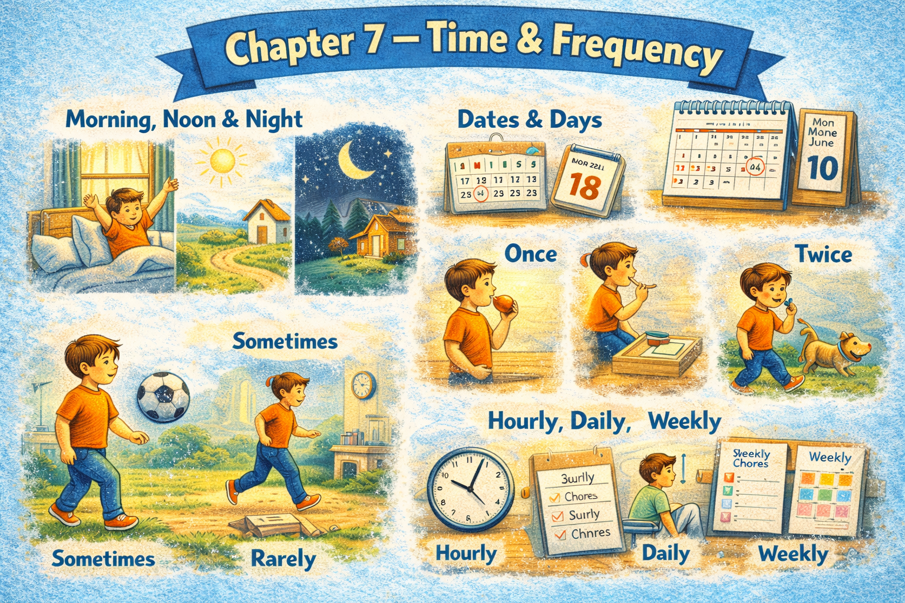

Chapter 7 — Time & Frequency

Micro Scene 1 — Regular Frequency
1️⃣ Scene Text
I usually start working at the same time every day.
I check my messages once in the morning and once in the afternoon.
Most days follow a similar pattern.
I often review unfinished tasks before beginning something new.
Sometimes I work late, but not frequently.
On weekends, my schedule shifts slightly.
I rarely skip a working day unless something urgent happens.
Habits form through repetition over time.
The more consistently I follow a routine, the more stable it becomes.
Regular frequency creates predictability.
Predictability reduces unnecessary decision-making.
2️⃣ Core Verb Pool
start
check
follow
review
work
shift
skip
form
follow
create
reduce
3️⃣ Structure Patterns
I usually + verb
I often + verb
I rarely + verb
Most days…
Once in + time expression
The more X, the more Y
Unless + clause
4️⃣ Replace & Extend
Replace the frequency:
I usually start at the same time.
→ I usually begin earlier.
→ I often start later.
Replace the condition:
I rarely skip a working day.
→ I rarely change my schedule.
→ I rarely delay important tasks.
Replace the pattern:
Most days follow a similar pattern.
→ Most mornings begin quietly.
→ Most evenings feel consistent.
5️⃣ Spoken Mode
I usually start work at the same time.
I check messages twice a day.
Most days look pretty similar.
I rarely skip a day unless something urgent comes up.
The more consistent I am, the easier it feels.
🔎 Structural Notes
• Adverbs of frequency (usually, often, rarely) mark habitual time.
• “The more…, the more…” expresses proportional reinforcement.
• “Unless” introduces exception
Micro Scene 2 — Duration and Continuity
1️⃣ Scene Text
Some tasks take only a few minutes to complete.
Others require sustained effort over several hours.
I sometimes work continuously without noticing how much time has passed.
During focused sessions, time seems to move faster.
If I concentrate deeply, I can remain engaged for a long period.
However, prolonged effort eventually reduces energy.
Short tasks create quick results, but long tasks demand patience.
The duration of a task influences how I approach it.
When work continues for too long, breaks become necessary.
Continuity builds depth, but it also consumes resources.
Time stretches or compresses depending on attention.
2️⃣ Core Verb Pool
take
require
work
notice
move
concentrate
remain
reduce
create
demand
influence
continue
build
consume
stretch
compress
3️⃣ Structure Patterns
X takes + time + to + verb
X requires + noun
During + noun
If X + verb, Y + verb
X remains + adjective
When X + verb, Y + verb
X influences + noun
X builds + noun
4️⃣ Replace & Extend
Replace the duration:
The task takes a few minutes.
→ The process takes several hours.
→ The revision takes longer than expected.
Replace the effect:
Time seems to move faster.
→ Time appears to slow down.
→ Time passes unnoticed.
Replace the demand:
Long tasks demand patience.
→ Long projects require discipline.
→ Extended focus requires breaks.
5️⃣ Spoken Mode
Some tasks only take a few minutes.
Others go on for hours.
When I’m focused, time flies.
If I work too long, my energy drops.
Long work builds depth, but it’s exhausting.
🔎 Structural Notes
• “takes + time + to…” measures duration.
• “During…” situates time within a period.
• “Time seems to…” expresses perception shift.
Micro Scene 3 — Recurrence and Repetition
1️⃣ Scene Text
Certain actions repeat throughout the day.
I check notifications multiple times without consciously deciding to.
Emails arrive repeatedly, creating small interruptions.
The same tasks resurface week after week.
Some problems reappear even after they have been solved once.
I revisit unfinished ideas whenever I have spare time.
Patterns of behavior tend to reinforce themselves.
The more frequently something repeats, the more automatic it becomes.
Repetition builds familiarity.
However, excessive repetition can lead to stagnation.
Recurring events shape the rhythm of the day.
2️⃣ Core Verb Pool
repeat
check
arrive
resurface
reappear
revisit
reinforce
become
build
lead
shape
3️⃣ Structure Patterns
X repeats + adverbial phrase
X arrives + frequency expression
X resurfaces + time reference
The more X + verb, the more Y + verb
X builds + noun
X leads to + noun
X shapes + noun
4️⃣ Replace & Extend
Replace the recurrence:
Emails arrive repeatedly.
→ Messages appear frequently.
→ Reminders pop up daily.
Replace the reinforcement:
Repetition builds familiarity.
→ Practice builds confidence.
→ Consistency builds reliability.
Replace the effect:
Excessive repetition leads to stagnation.
→ Too much repetition reduces creativity.
→ Constant recurrence increases fatigue.
5️⃣ Spoken Mode
Some things just keep repeating during the day.
I check notifications again and again.
Certain tasks come back every week.
The more I repeat something, the more automatic it feels.
But too much repetition can get dull.
🔎 Structural Notes
• “resurface / reappear / revisit” indicate repeated emergence.
• “again and again” emphasizes informal repetition.
• “tend to” implies general pattern.
Micro Scene 4 — Sequence and Order in Time
1️⃣ Scene Text
Most days follow a predictable sequence of events.
First, I review pending tasks.
Then, I decide which one to tackle.
After that, I begin focused work.
Later in the day, I reassess progress.
Eventually, I wrap up the session and prepare for tomorrow.
Each step follows the previous one in a logical order.
If one stage is delayed, the entire sequence shifts.
Some actions must occur before others can begin.
Timing determines whether a task fits smoothly into the day.
Sequence creates structure within time.
2️⃣ Core Verb Pool
follow
review
decide
tackle
begin
reassess
wrap up
prepare
delay
shift
occur
determine
fit
3️⃣ Structure Patterns
First…, Then…, After that…, Eventually…
If X + verb, Y + verb
X must occur before Y
X determines whether + clause
X fits into + noun
X follows Y
4️⃣ Replace & Extend
Replace the order:
First I review tasks.
→ First I check email.
→ First I plan the day.
Replace the condition:
If one stage is delayed…
→ If I miss the first step…
→ If preparation takes too long…
Replace the sequence:
Some actions must occur before others.
→ Planning must occur before execution.
→ Clarification must occur before delegation.
5️⃣ Spoken Mode
First I review what needs to be done.
Then I pick something to work on.
If one step gets delayed, everything shifts.
Some things have to happen before others.
Order gives the day structure.
🔎 Structural Notes
• Sequencing adverbs (first, then, eventually) map temporal order.
• “must occur before” expresses dependency in time.
• “fit into” implies alignment within schedule.
Micro Scene 5 — Recent Past and Ongoing Relevance
1️⃣ Scene Text
I have completed several tasks this week.
Some of them have already influenced the direction of new work.
I have been adjusting my schedule to improve efficiency.
Recently, I have focused more on prioritization.
Over the past few days, small changes have accumulated.
I have noticed that consistency produces better results.
Certain problems have resurfaced despite previous efforts.
So far, progress has remained steady.
Up to this point, I have avoided major delays.
The past continues to shape the present.
What has been done still affects what comes next.
2️⃣ Core Verb Pool
complete
influence
adjust
focus
accumulate
notice
resurface
remain
avoid
shape
affect
3️⃣ Structure Patterns
I have + past participle
I have been + verb-ing
Recently,…
Over the past + time expression
So far,…
Up to this point,…
X continues to + verb
What has been done + verb
4️⃣ Replace & Extend
Replace the time frame:
I have completed several tasks this week.
→ I have finished multiple projects this month.
→ I have revised the plan recently.
Replace the continuity:
Progress has remained steady.
→ Performance has improved gradually.
→ The situation has stabilized.
Replace the influence:
The past shapes the present.
→ Earlier decisions affect current outcomes.
→ Previous actions determine current structure.
5️⃣ Spoken Mode
I’ve finished a few things this week.
Recently, I’ve been adjusting my schedule.
So far, progress has been steady.
Up to now, I haven’t had major delays.
What I’ve done still affects what I’m doing.
🔎 Structural Notes
• “have + past participle” links past action to present state.
• “have been + verb-ing” emphasizes ongoing activity.
• “So far / Up to this point” mark continuing relevance.
Micro Scene 6 — Future Planning and Projection
1️⃣ Scene Text
Tomorrow, I will begin with the most demanding task.
I plan to allocate more time to deep work next week.
If everything goes as expected, I will finish the current project soon.
In the coming days, I intend to reduce unnecessary interruptions.
I am going to reorganize my schedule to improve efficiency.
By the end of the month, I will have completed several major tasks.
Some adjustments will take effect gradually.
I expect certain challenges to arise.
Future planning reduces uncertainty.
Projection allows preparation.
The way I manage tomorrow depends on what I decide today.
2️⃣ Core Verb Pool
begin
plan
allocate
finish
intend
reduce
reorganize
complete
take effect
expect
arise
depend
prepare
3️⃣ Structure Patterns
Tomorrow, I will + verb
I plan to + verb
If X + verb, Y will + verb
I am going to + verb
By + future time, I will have + past participle
X depends on + noun
4️⃣ Replace & Extend
Replace the intention:
I plan to allocate more time.
→ I plan to reduce workload.
→ I plan to focus on priority tasks.
Replace the expectation:
I expect challenges to arise.
→ I expect progress to accelerate.
→ I expect delays if conditions change.
Replace the projection:
By the end of the week, I will have completed the report.
→ By next month, I will have improved efficiency.
→ By tomorrow, I will have finalized the outline.
5️⃣ Spoken Mode
Tomorrow I’ll start with the hardest task.
I’m going to reorganize my schedule.
If things go well, I’ll finish soon.
By the end of the month, I’ll have completed several big tasks.
What I do today affects tomorrow.
🔎 Structural Notes
• “will” expresses decision or future fact.
• “going to” signals planned intention.
• “will have + past participle” marks future completion before a point in time.
🔸 Integration Scene — Time as Structure
Time organizes action into structure.
Habits repeat daily and create stability.
Some tasks take minutes, while others extend for hours.
Events follow a sequence and depend on proper timing.
Recent actions continue to influence the present.
Progress accumulates gradually.
The longer something remains unfinished, the heavier it feels.
Repetition builds familiarity but may reduce freshness.
Interruptions reset momentum.
Breaks divide time into manageable segments.
Future planning reduces uncertainty.
What has been completed shapes what will be attempted next.
Time stretches during focus and compresses during distraction.
Frequency defines pattern.
Duration defines depth.
Sequence defines order.
Integration Verb Focus
repeat
take
follow
continue
accumulate
plan
depend
shape